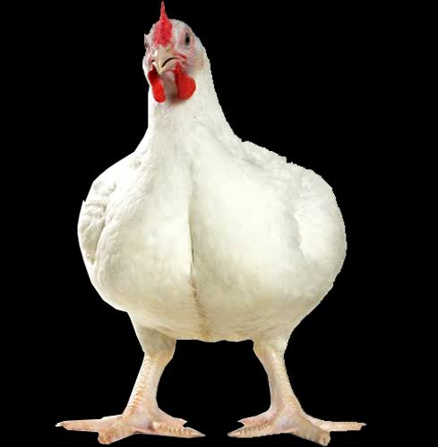
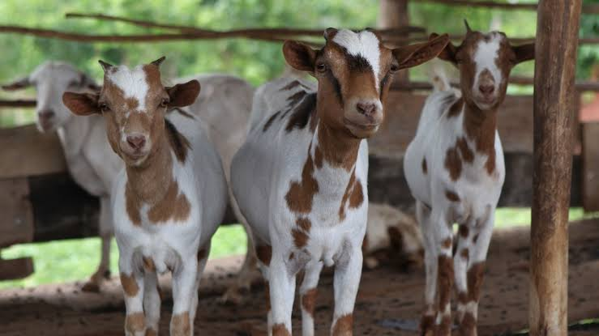
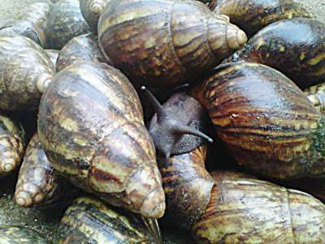

Center for Sustainable Agribusiness and Food Security (CESAF) NGO
....Promoting Sustainable Agricultural Production
Broiler Chicken Production

Broilers are birds which have been selected for fast growth so as to be ready for the market at
about 8 weeks. Broilers are usually reared on .....
Goat Farming

Goats were probably the first ruminant animal to be domesticated some
8000 years ago. In the ancient civilisations along the rivers of Nile (in
Africa), Tigris and Euphrates (in Asia) and Indus (in India) when
populations migrated from these areas, the domesticated goats spread
through the continents of Europe and America. There are several good
reasons for keeping goats even in preference to larger animals such as
cattle. These include...
Snail Farming

Snail meat has been consumed by humans worldwide since prehistoric times. It is high in protein (12-16%) and iron (45-50 mg/kg), low in fat, and contains almost all the amino acids needed by humans. A recent study has also shown that the glandular substances in edible snail meat cause agglutination of certain bacteria, which could be of value in fighting a variety of ailments, including whooping cough...
Do you need a Practical One on One Fingerlings Production Training on your Farm?
Contact CESAF today!
Call: 08051676205